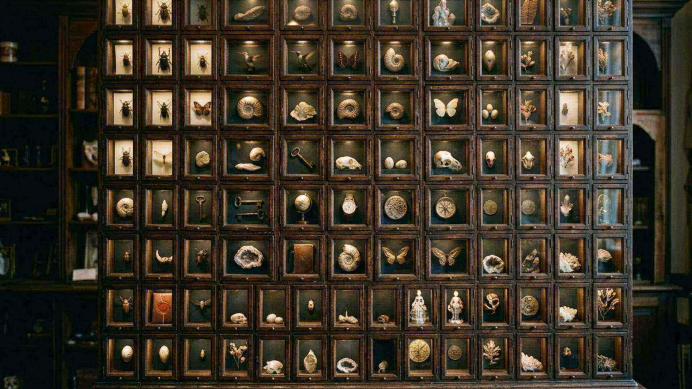

Le cabinet des merveilles
125 fiches, 8 galeries
Chaque organisme est traité comme un dossier technique : le problème, la solution, la mesure publiée, et l’usage que l’homme en a tiré. Rien n’est laissé à l’impression.
Le principe
Un problème, une solution, une mesure
Une merveille n’est pas une jolie image. C’est un organisme qui résout un problème que nous savons formuler, avec une performance que nous savons mesurer, et que l’ingénierie finit par copier. Cette contrainte — mesurable, reproductible, déjà copiée — est ce qui distingue une observation d’un argument.
125 fiches sur 125 disposent déjà de leur visuel ; les autres s’affichent avec leur nom scientifique en attendant leur image. Aucune fiche n’est vide.

Les systèmes du vivant
Ce que chaque organisme sait résoudre
Écholocation, gestion de l’eau et de l’énergie, photosynthèse, bioluminescence, mycorhizes, moteur du flagelle : neuf fonctions apparues indépendamment chez des organismes sans lien de parenté, et déjà copiées par l’ingénierie.
Le corps humain
Neuf mécanismes qui tournent sans interruption
Un lait qui change de composition jour après jour, une cellule unique qui devient deux cents métiers, une hémoglobine coopérative, des hormones dosées au nanogramme, une réparation spontanée, une rétine inversée et pourtant fonctionnelle, un os creux, un goût qui aiguille, un stockage d’information compact.

Les animaux terrestres
Dix-sept brevets déposés par la nature
Du castor qui reconstruit une rivière à l’ornithorynque qui lit un champ électrique, la même méthode : un organe, une performance mesurée, une technologie humaine qui s’en est emparée.

La vie des eaux
Vingt-quatre fiches sous la surface
Peaux qui glissent, colles qui prennent sous l’eau, sonars, camouflages instantanés, filtres autonettoyants, cristaux optiques : l’océan est le plus grand bureau d’études du monde.

Les oiseaux du ciel
Quatorze fiches, du colibri à l’albatros
Chants appris, becs profilés, plumes silencieuses, nids-incubateurs, navigation transocéanique : le vol est une somme de solutions indépendantes qui doivent tenir ensemble.
Reptiles et amphibiens
Huit fiches, régénération et capteurs
Un cristallin et un membre entier reconstruits, une peau transparente, un vol plané sans muscle de vol, une incubation interne : des prouesses que la médecine étudie encore aujourd’hui.
Insectes et arachnides
Trente-cinq fiches, à l’échelle du millimètre
Engrenages, gyroscopes, moteur chimique à deux composants, adhésifs, soies, hexagones, nanostructures colorées : l’essentiel de ce que nous savons faire, un insecte l’a déjà fait sans machine.

Plantes et micro-organismes
Neuf fiches, la vie sans système nerveux
Sensibilité, mémoire, pompes, actionneurs passifs, réseaux souterrains, spores qui percent : les végétaux et les microbes résolvent des problèmes sans cerveau ni muscle.
Ce que cela implique
L’argument du brevet
Quand une industrie entière paie des ingénieurs pour copier un scarabée, elle reconnaît implicitement que ce scarabée avait déjà résolu le problème. Le cabinet ne dit pas « c’est beau, donc Dieu existe ». Il dit : l’ingénierie existe partout dans le vivant, et l’ingénierie suppose une intelligence. Le reste du site vérifie si cette intelligence a signé.
Écouter le cabinet Voir les pièces à conviction Lire la méthode